Local review · current S0-approved increment integrated. The four-stage R3 case remains accepted; Native26/52 outer9 now pass S0 original-coordinate reception. Exact inputs and checkpoints remain private.
Input snapshot: mcl_s0_to_v_presentation_inputs_r3_v1@2026-10-05T03:57:54.309662+00:00. Input version: central_champaign_urbana_2026_r2; frozen configuration SHA-256 9eb316749d925243d18c6a8ff7b5dcd5402506d7ca765333ea2a06878268f933.
Scope and model instance
This case follows morning work travel within a 19.303 km² rectangle spanning central Champaign and Urbana. UIUC identifies the location; the rectangle includes residential and employment areas outside university property. Its bounds are 88.255°W to 88.204°W and 40.087°N to 40.127°N. The boundary follows the four OSM tiles acquired during preflight and was fixed before inspecting assignment results.
Twenty-one zones support a weekday 08:00–09:00 HBW scenario. Generation, distribution, mode choice and road loading form one forward pass. The calculation describes a bounded engineering experiment, with local source geography but assumed behavioral and road parameters. It does not estimate either municipality's complete travel or reproduce an observed UIUC commute survey.
Inputs and preparation
The demographic adapter selected 725 Census blocks whose published internal points fall inside the rectangle. Joined 2020 PL 94-171 population and occupied-unit fields give 52,040 residents and 19,696 occupied housing units. The same block selection contains 43,602 workplace jobs in the Illinois 2023 LODES WAC C000 field. Residence, housing and workplace jobs remain different quantities and different vintages.
The selected-block totals must be kept separate from the earlier count of 84,805 residents in whole intersecting tracts. A tract may extend beyond the model. The original population/context figure therefore describes broader source geography and 2024 place outlines; it does not replace the block-based demand denominator. Selecting by block internal point also leaves uncertainty at the clipped edge.
The preflight GMNS conversion contains 24,775 nodes and 46,203 directed physical links before the automobile graph is screened. Its network figure records source geometry, whereas the assignment maps contain modeled loading on retained traversals. The frozen road construction keeps explicit physical-to-source mappings so that turn movements and split road traversals can be distinguished.
An MTD transit reference comes from the BTS National Transit Map archive dated 9 March 2026. It has 564 stop records and 607 route-shape records clipped to the area. These locations do not supply a verified service-day timetable. The corresponding figure is retained as source context; it is not a transit skim, ridership result or road-loading map.
Retained physical road graph
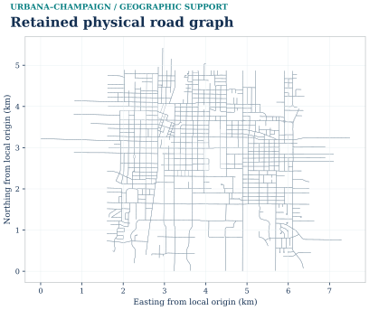
Description, units and scope
11,365 retained physical directed traversals in the saved 08:00–09:00 HBW model, shown in EPSG:26916. This is the retained model graph, not a claim to draw every road in the source archive. Virtual movements are excluded; colour has no traffic meaning. © OpenStreetMap contributors / ODbL. Reciprocal directed arcs can share geometry; no assigned flow is encoded. This drawing uses the frozen run_v1 evidence. Later supplementary datasets are separate and are not implied to have entered this scenario.
PNG · SVG · PDF · Source record
Earlier tract population geography
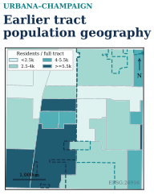
Description, units and scope
Earlier tract and place geography; its whole-tract counts differ from the selected-block demand denominator. 2020 full-tract counts - clipped view
PNG · SVG · PDF · Source record
Population and household inputs
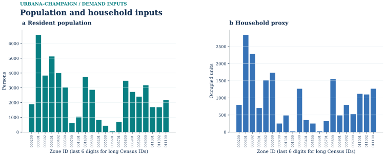
Description, units and scope
2020 blocks selected by internal point; not earlier whole-tract totals. All 21 zones are retained; population total 52,040. Occupied units total 19,696. Missing household fields are unknown, not zero. Census/ACS allocation is an input, not a simulated traffic quantity. This drawing uses the frozen run_v1 evidence. Later supplementary datasets are separate and are not implied to have entered this scenario.
PNG · SVG · PDF · Source record
Transit source geography

Description, units and scope
BTS/NTM archive / 2026-03-09; timetable unknown. 564 stop records; 607 route-shape records, not unique routes or scheduled trips. The gray retained road graph is geographic context, not a transit route model. Source stops and route shapes do not establish legal pedestrian access, operating service, or observed ridership. This drawing uses the frozen run_v1 evidence. Later supplementary datasets are separate and are not implied to have entered this scenario.
PNG · SVG · PDF · Source record
01 / Trip generation
Occupied housing is the production basis. The predeclared rate is 1.2 HBW person trips per occupied unit per day, multiplied by a 25% share for the modeled hour. Applying those assumptions to 19,696 units yields 5,908.8 person trips. Neither factor was fitted to a local travel survey.
A 55% internal capture and an 8% intrazonal fraction of captured demand partition that total into 2,658.96 external or uncaptured trips, 259.9872 intrazonal trips and 2,989.8528 internal interzonal trips. Jobs distribute attractions across zones; normalization ties their total to internal productions. Only the interzonal component advances through the rest of the chain. The updated generation chart shows all 21 zones in stable ID order, alongside the complete demand ledger.
Trip generation and demand accounting
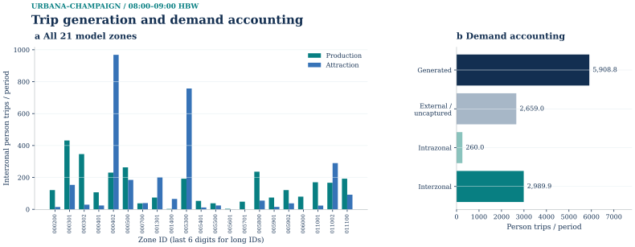
Description, units and scope
All 21 zones; 08:00–09:00 HBW. The left panel shows saved interzonal productions/attractions. The right panel accounts for all generated persons, including excluded and intrazonal components. No top-12 truncation. Scenario assumptions, not measured trip counts. External and intrazonal components do not enter interzonal assignment; attractions are normalized to productions. This drawing uses the frozen run_v1 evidence. Later supplementary datasets are separate and are not implied to have entered this scenario.
PNG · SVG · PDF · Source record
02 / Trip distribution
The gravity kernel uses exp(−0.08 × minutes) with directed network impedance. Iterative proportional fitting adjusts the matrix to production and attraction margins. The 0.08 min⁻¹ deterrence coefficient is an engineering assumption. Intrazonal entries remain structural zeros because that demand was removed into the generation ledger.
The saved balance reaches a maximum margin discrepancy of 7.6423×10⁻⁶ person trips after five IPF iterations. Its 380 positive PA movements become 418 positive directed OD pairs under the declared 85% forward and 15% reverse convention. The directed total is 2,989.8528 persons. Two of the 420 possible directed interzonal pairs remain zero; the display must preserve those cells and the real zone-ID ordering. Heatmap color uses log(1 + persons) only for legibility.
Trip distribution and directed OD margins
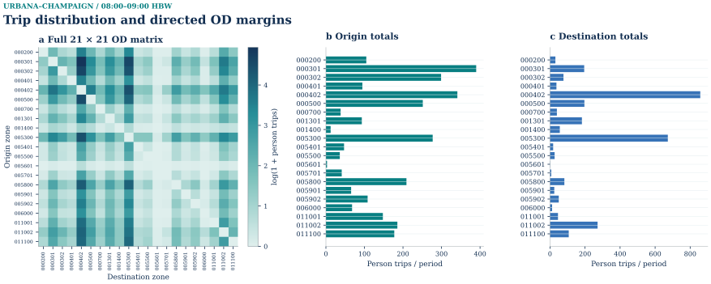
Description, units and scope
Full 21×21 model-zone matrix including zero cells; 418 positive OD pairs and 2,989.852800000 persons in 08:00–09:00 HBW. Colours are log(1+persons); margins are untransformed directed OD totals after PA direction. Every model zone is retained. Zero rows and columns remain visible; intrazonal cells are structural zeros. Labels use the final six digits of long zone IDs. This drawing uses the frozen run_v1 evidence. Later supplementary datasets are separate and are not implied to have entered this scenario.
PNG · SVG · PDF · Source record
03 / Mode choice
Driving and walking have separate costs for each OD. The drive alternative adds three minutes for parking and egress to its network time. Walking follows the walk-permitted OSM graph at an assumed 75 m/min with another 0.5 minute of access. These abstractions do not certify property entrances, crossing legality or step-free access.
A conditional logit uses a sensitivity of 0.08 per generalized minute, a drive constant of zero and a walk constant of 0.2. Drive probability varies by OD, approximately from 0.532 to 0.9977. Aggregation produces 2,454.5604 drive persons and 535.2924 walk persons; the split was not inserted as a fixed citywide percentage.
Transit is Not modelled. The archived route and stop geometries lack the selected-day trip and stop-time information required for an OD-specific cost. A transit entry must therefore not look like an ordinary bar predicting zero riders. All 2,989.8528 modeled persons are represented by the two implemented alternatives. Dividing drive persons once by 1.25 persons per vehicle and applying PCE 1.0 produces 1,963.6483 PCE for road assignment.
Mode choice: demand, cost and availability
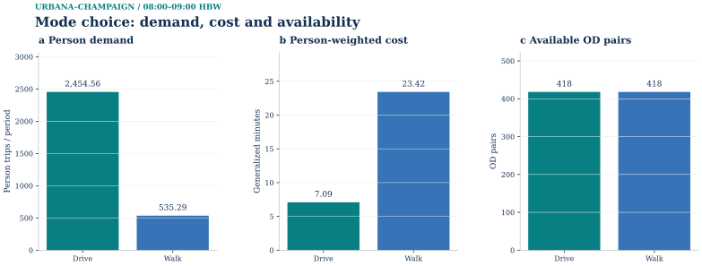
Description, units and scope
Saved OD-specific choice in 08:00–09:00 HBW; sums over every positive-demand OD. Persons, person-weighted generalized minutes, and available OD counts have separate axes. Transit is not modeled; no zero bar is shown. Generalized cost includes model time and money terms. Person totals precede the separate occupancy-to-PCE conversion. This drawing uses the frozen run_v1 evidence. Later supplementary datasets are separate and are not implied to have entered this scenario.
PNG · SVG · PDF · Source record
04 / Physical-link assignment
The screened network contains 11,365 physical traversal arcs and 15,237 turn arcs, totaling 26,602. Midpoint road-access proxies connect all 21 zones and all 420 possible interzonal pairs are reachable. Of 32 applicable core restrictions, 31 affect graph transitions and one is vacuous after filtering. Two red-signal-only tags are not treated as turn prohibitions in every signal phase. These are graph checks rather than field-certified parcel-access findings.
The frozen capacity/speed pairs, in PCE/h and km/h respectively, are 450/30 for residential, 550/35 for unclassified, 700/40 for tertiary, 950/45 for secondary and 1,500/50 for primary. BPR parameters are α=0.15 and β=4. At the saved solution, total loaded travel time is about 8,085.2324 PCE-min and the largest mapped segment carries about 546 PCE. Those physical-flow quantities differ from the integrated Beckmann objective.
Static Frank–Wolfe loads the exact Stage 3 vehicle OD on the declared turn-expanded graph. BPR travel time uses soft capacity: a v/c above one is permitted mathematically and does not constitute a hard-capacity violation. The initial loading already passes the 10⁻⁴ relative-gap threshold. The trace consequently contains an initial check and no FW updates; there is no multi-iteration performance experiment to display.
The saved maximum v/c is 1.21296. That fact rules out describing the case as uncongested merely because the update count is zero. The objective is 8,041.086812762 PCE-min at the saved demand of 1,963.648312713 PCE. These are values for this internal morning scenario, not observed network conditions.
The canonical spatial outputs are the city's original FS_A04 flow and FS_A05 v/c maps. Their physical mapping contains 11,365 traversal arcs and partitions split :A/:B links into the corresponding pieces of source geometry. The mapped length fractions conserve each source link. The separate A01/A03 charts remain useful model-arc diagnostics; turn arcs in those charts must not be described as additional roads.
Frank–Wolfe: physical-road loading
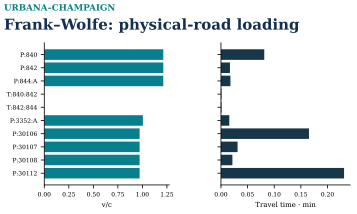
Description, units and scope
v/c and BPR travel time for top 10 loaded links; v/c>1 is allowed in static BPR. Single-pass engineering scenario; no local empirical calibration. These rankings use the saved solver-arc table and remain separate from the physical-road maps; virtual arcs are not road geometry. 19.303 km2 central urban subarea / weekday AM HBW
PNG · SVG · PDF · Source record
Frank–Wolfe: physical flow and distribution

Description, units and scope
Saved Urbana–Champaign static Frank–Wolfe endpoint for 08:00–09:00 HBW. The map and 22-bin histogram use the same complete 11,365-link physical-flow vector, including 7,681 exact-zero links; 3,684 links exceed 1e-6 PCE. Flow is PCE accumulated during the declared one-hour period, not persons or flow per simulation time step. The map uses a square-root sequential color scale with original-unit ticks and gray road context; histogram counts are linear and no links are omitted. Turn, access and other nonphysical solver arcs are excluded. Only the saved iteration-0 initialization exists; FW performed zero subsequent updates. Reciprocal directed arcs may overlap geometrically; flows are not summed. Serial A/B road traversals retain their directed first/second geometry halves. These are 11,365 model physical traversals, not the 5,913-link preflight graph or the separate S72 transfer. This is a modeled engineering scenario, not observed traffic. © OpenStreetMap contributors / ODbL 1.0. R11 layout repair: map and all-link histogram share measured top and bottom panel bounds. The original saved physical-link IDs, exact flow vector, geographic vertices, display offsets, histogram edges and counts remain unchanged.
PNG · SVG · PDF · Source record
Saved initial checks and original endpoint views
Frank–Wolfe: physical-road volume / capacity

Description, units and scope
Actual saved assignment backprojected only to physical traversal segments; model zone access and turn arcs excluded. Single-pass engineering scenario; no local empirical calibration. 19.303 km2 central urban subarea / weekday AM HBW
PNG · SVG · PDF · Source record
Saved results and assignment checks
S0's R3 receiver accepted the stored solution, then performed a fresh four-stage replay from the frozen inputs. The saved-table comparison passed and all six negative controls were rejected. Earlier producer checks separately traced hashes through the stages, reconstructed path and link flows, checked OD probabilities and units, and recomputed the objective and full-network gap without calling the optimizer.
The producer's largest reported node-balance residual was 1.71×10⁻¹³ PCE. Its negative fixtures covered a missing generation result, altered OD quantity, an unknown zone, changed choice probability, an unknown saved-path link and deletion of the current assignment result. Computational acceptance establishes the stated model's internal consistency; it does not establish empirical traffic accuracy.
Saved initial checks and original endpoint views
Frank–Wolfe: the saved initial check
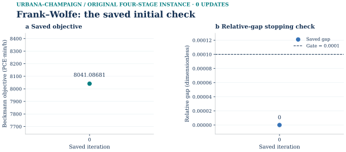
Only the actual saved iteration 0 is shown: objective 8041.08681276163 PCE·min/h and relative gap 0, against the unchanged 0.0001 stopping gate. There were zero updates. Each panel contains a single numerical point; no missing trajectory or second state is inferred. The companion physical-flow map reads this method’s own saved vector. This frozen original demand instance is not relabelled as a later selected-demand or transit-revision run.
SVG · PNG · PDF · Source data
Multiresolution geographic reference
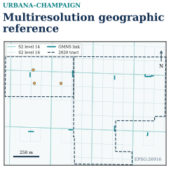
Description, units and scope
The earlier 29-object S2 sample, separate from the four-stage demand and assignment. S2 14/16 shown - 12 parent IDs
PNG · SVG · PDF · Source record
Static assignment: demand margins and physical endpoints
Static assignment demand margins

Complete evidence · same figure · SVG · PNG · PDF · Plot data · Source record · Caption
Physical demand endpoints

Complete evidence · same figure · SVG · PNG · PDF · Plot data · Source record · Caption
Time-expanded network and path examples
Time-expanded network in layers
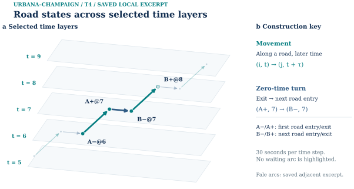
Complete evidence · same figure · SVG · PNG · PDF · Plot data · Source record · Caption
Local construction details
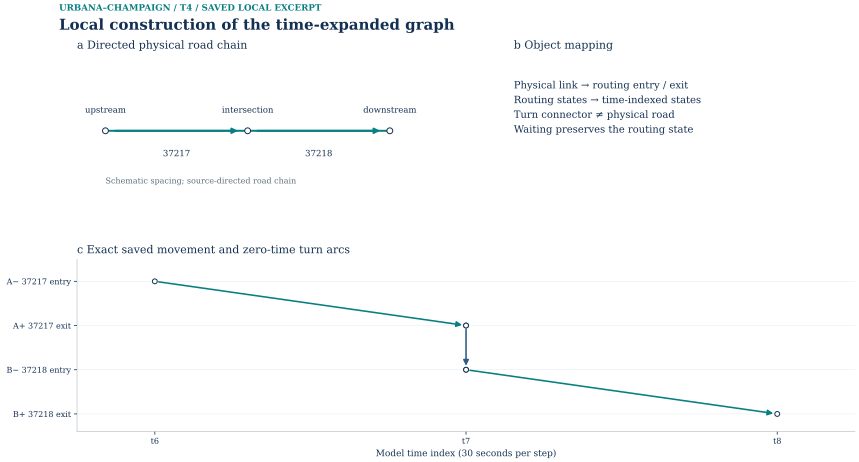
Complete evidence · same figure · SVG · PNG · PDF · Plot data · Source record · Caption
Optimization on the time-expanded network
Phase I: artificial-flow clearance
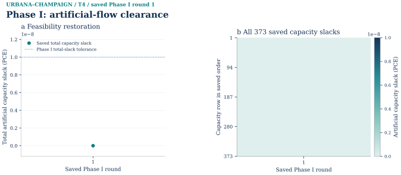
Complete evidence · same figure · SVG · PNG · PDF · Plot data · Source record · Caption
Phase II objective
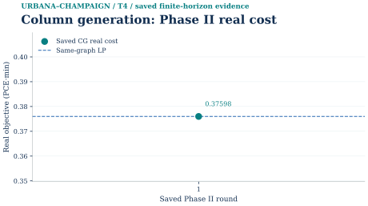
Complete evidence · same figure · SVG · PNG · PDF · Plot data · Source record
Independent pricing closure
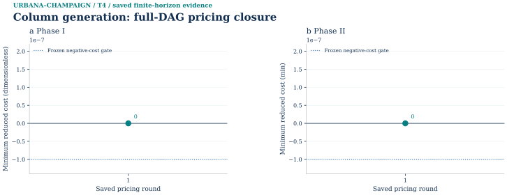
Complete evidence · same figure · SVG · PNG · PDF · Plot data · Source record
Lagrangian bounds and certified gap
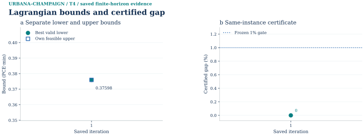
Complete evidence · same figure · SVG · PNG · PDF · Plot data · Source record
Capacity prices at the best dual bound
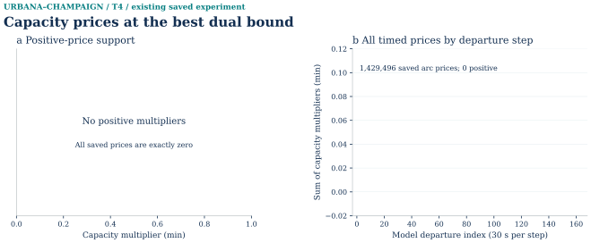
Complete evidence · same figure · SVG · PNG · PDF · Plot data · Source record · Caption
Path-pool growth and primal recovery
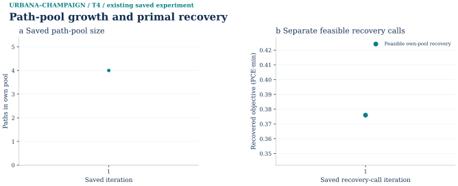
Complete evidence · same figure · SVG · PNG · PDF · Plot data · Source record · Caption
Reproduction and input identity
The public reproducibility archive is not yet available.
Python 3.11+ standard library for numerical stages/verifier
Matplotlib, NumPy, Shapely and Pillow for figures and publication checks
Python-Markdown for HTML rendering
Runtime versions above are recorded producer facts. The V presentation task does not replace or upgrade the frozen numerical environment.
Historic facility photos (2016)
These two credited 2016 Commons thumbnails give historical facility context only. They do not establish a present-day entrance, camera ground target, GPS mode or a shared trip with the 2025 trace. The C02 route, trace, geometry bridge and technical receipt remain private.
Model limits and observations
Road speed, capacity, access penalties, occupancy and utility parameters are explicit proxies. No observed link counts or local household travel sample calibrates this scenario. Excluded external and intrazonal travel is accounted for but is not routed as internal OD. Transit assignment, freight, emissions, safety, spillback and future-year forecasting are outside the calculation.
Frozen-input reproduction and source acquisition are different operations. A saved-result check invokes the verifier alone; a fresh solve writes a new output directory. Re-downloading OSM, Census or BTS data may produce new bytes and is outside a claim about the frozen hashes. Historical producer commands are retained as provenance, with the distributable command package still unavailable.
Map attribution remains © OpenStreetMap contributors, ODbL 1.0. Census PL and LEHD supply the demographic and workplace references. The BTS reference retains its CC BY 3.0 US notice. Publishing these derived displays does not authorize distributing raw feeds, private observations or unlisted material.
The older S2 illustration is retained because it contributes different information from the four-stage model. It covers 29 sample objects at levels 12, 14 and 16; it is not a complete demand allocation or full-area network representation.
Earlier observation work includes a screened, timed 27-point GPX segment without an accepted map-matched trip. OSM-tagged crossings, signals, stops and entrances also lack photo-confirmed geometry. A private iCAP pedestrian series and the historic GPX sample did not calibrate the HBW model. These source limits remain visible without publishing precise traces or private records.